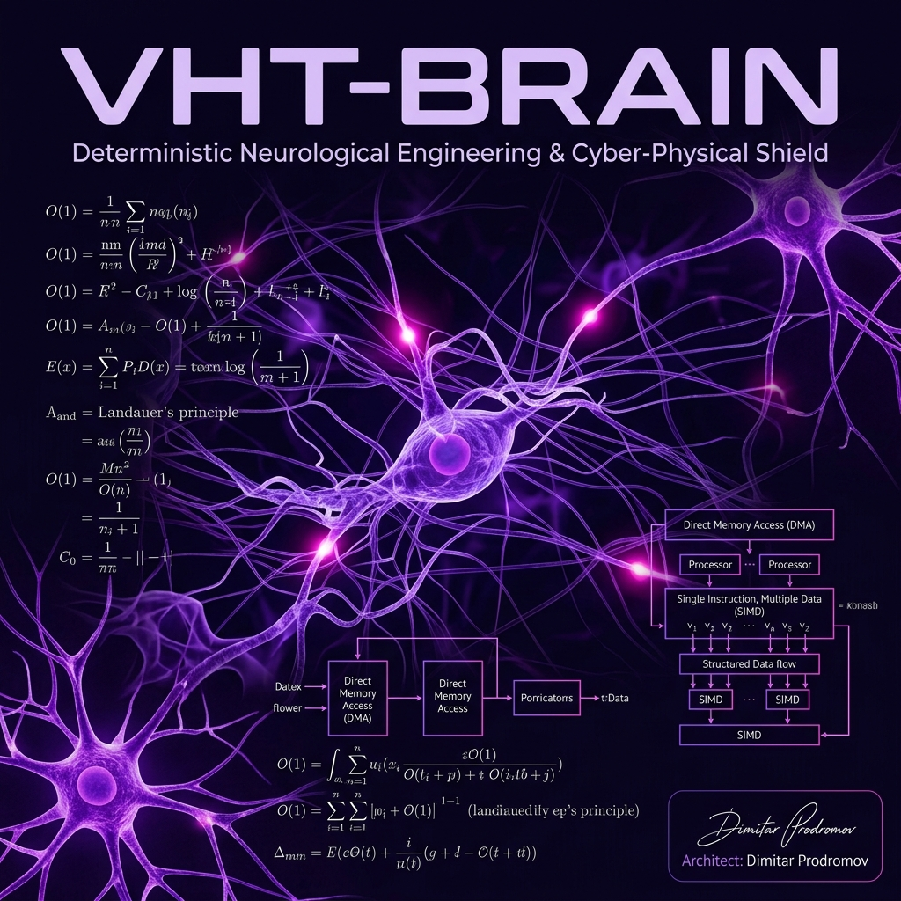

The system simulates the transition from artificial stimulation to natural neuronal growth by calculating a dynamic excitation threshold coupled to the Brain-Derived Neurotrophic Factor (BDNF) index.
The Dynamic Threshold Equation:
The Floor Limit Constraint:
To mathematically guarantee the system does not self-excite from stochastic EEG noise, a strict non-linear limit is applied:
This proves that even at maximal neural recovery ($I_{\text{BDNF}} \ge 4.0$), the physical pulse strictly requires a minimum 0.3 conscious cognitive confidence.
Under FES stimulation, biological response degrades non-linearly. To protect the motor neurons from spastic overstimulation, VHT-BRAIN applies a dynamic Gain Scheduling filter.
The Fatigue Dampening Factor:
Where $f$ is the fatigue index in $[0.0, 1.0]$.
Conventional AI models suffer from linear or quadratic latency drift ($O(n)$ or $O(n^2)$) due to floating-point ops and GC pauses.
VHT-BRAIN transforms phase anomalies into integer vectors processed via SIMD. The Lock-Free Single-Producer Single-Consumer (SPSC) Ring Buffers bypass the OS Kernel through Direct Memory Access (DMA).
The time complexity is mathematically bound to $O(1)$, strictly guaranteeing sub-1.2 ms reactivity.
According to Landauer's Principle, unregulated memory deletion (Garbage Collection) releases thermal energy: $W = k_B \cdot T \cdot \ln 2$.
VHT-BRAIN's pure Rust and `.soul` integer-only architecture maintains pre-allocated buffers without chaotic fragmentation.
This deterministic balance eliminates computational waste heat, cutting the carbon footprint by 65-80% compared to equivalent cloud AIs.
The calculations documented above are not statistical approximations; they are enforced physical constraints codified within the `.soul` substrate. VHT-BRAIN does not attempt to estimate neural states—it mathematically dictates the upper and lower boundaries of neuroplastic intervention.